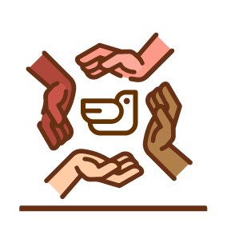

Este momento tiene varias intenciones. En primer lugar, se trata de ayudar a los participantes a hacer presente la grande riqueza cuando gozamos de paz. Al mismo tiempo hacerse conscientes de lo que sucede cuando perdemos la paz. En un segundo momento, preguntando acerca de las causas hay que ayudar a tomar conciencia de que en muchas ocasiones y quizá algunas personas hemos sido indiferentes ante la perdida de paz y no nos hemos comprometido a hacer algo por recobrar y construir la paz que se ha perdido. Finalmente, conviene también señalar que se puede constatar que cada vez son más personas las que dándose cuenta de esta situación de pérdida de la paz se han comprometido a ser "artesanos de paz" desde la vida personal hasta participar en organizaciones de la sociedad civil que se comprometen con la construcción de la paz.
Para lograr esto proponemos responder a las siguientes preguntas.
Terminando de compartir las respuestas se propone la siguiente reflexión.
Podemos constatar tres hechos importantes ante esta situación de la pérdida de la Paz.
El primer hecho es que la pérdida de la paz que estamos viviendo en lugar de disminuir va aumentando. No hace falta hacer un gran estudio para verificar que la violencia crece en los distintos ámbitos de la vida. En la familia, entre vecinos, en las escuelas, en la sociedad.
El segundo hecho que hay que señalar es que hay muchas personas que permanecemos indiferentes ante esta situación que vivimos de pérdida de la paz. Hay muchos que pensamos que, como a nosotros aún no nos pasa nada, pues no tenemos por qué preocuparnos ni nos toca hacer nada. Pensamos que los que se deben de preocupar son aquellos que han tenido la mala suerte de vivir situaciones de pérdida de la paz. Mientras no nos toque pues darle gracias a Dios y no meternos en problemas
Finalmente, el tercer hecho que se constata es que cada vez son más las personas que dejando la indiferencia se comprometen de manera personal o junto con otras personas en alguna organización de la sociedad civil o junto con los vecinos a hacer algo para construir nuevamente la paz que se ha perdido.
Concluimos este momento trayendo a la memoria el refrán que dice: "Nadie sabe lo que tiene hasta que lo ve perdido". No esperemos a perder totalmente la paz y perder las oportunidades que tenemos para hacer algo por construir y mantener nuevamente la paz que hemos perdido.